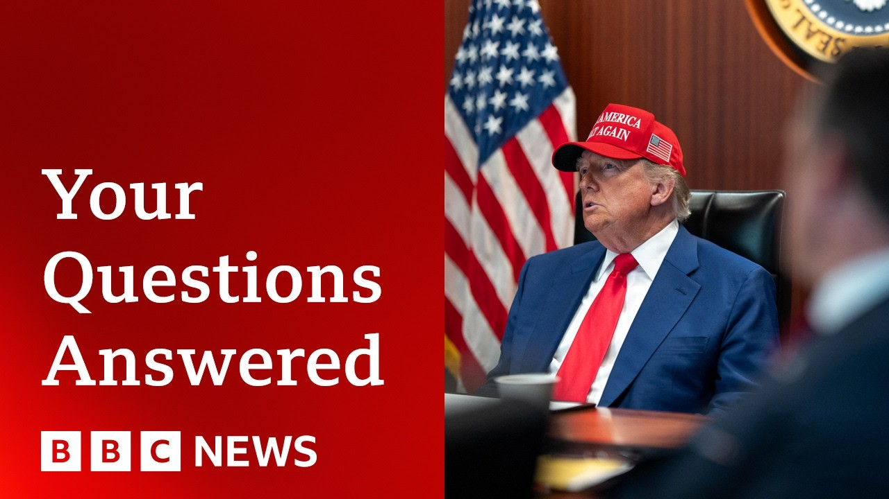

【美国为何袭击伊朗？后果是什么？BBC专家解答你的疑问 | BBC新闻】
Summary: BBC experts analyze the US strike on Iran, its unprecedented nature, potential consequences, Iran's limited response options, global reactions, and the risk of escalating tensions in the region.
摘要： BBC专家分析美国对伊朗的袭击、其前所未有的性质、潜在后果、伊朗有限的应对选择、全球反应以及地区紧张局势升级的风险。

⏱️ Estimated Reading Time: 74 min
📚 六级生词 📚 雅思生词 📚 托福生词 📚 专八生词 📚 SAT生词 📚 考研生词 📚 GRE生词 📚 高考生词
Well, now let us unpack the latest in the conflict in the Middle East with our team of experts here at the BBC.
现在，让我们与BBC的专家团队一起解读中东冲突的最新进展。
With me in the studio, our chief international correspondent Lee Ducet and Security Briefs Mikey Kay, a former senior officer and assault helicopter pilot with the British military.
在演播室里，有我们的首席国际记者李·杜塞特和安全简报专家米基·凯，他曾是英国军队的高级军官和攻击直升机飞行员。
We're also going to be joined by Sioves Argelan from BBC Persian, part of the BBC World Service.
我们还将连线BBC波斯语频道的西奥瓦斯·阿杰兰，该频道隶属于BBC国际频道。
And joining us also our world affairs editor John Simpson, our correspondent Mark Lohen in Tel Aiv and from Washington our chief North America correspondent Gary O' Donahghue.
同时加入我们的还有世界事务编辑约翰·辛普森、驻特拉维夫的记者马克·洛恩，以及驻华盛顿的首席北美记者加里·奥多纳休。
Let me begin uh with you Lee.
让我先问你，李。
In terms of where we are today, it is momentous that the US has struck in Iran.
就目前的情况而言，美国对伊朗发动袭击意义重大。
What are the potential consequences that are playing out and the questions being asked in the region as you're seeing right now?
根据你目前所见，潜在的后果是什么？该地区正在提出哪些问题？
This is a a major turning point in the 45year-old standoff between Iran and the United States of America.
这是伊朗和美国之间长达45年对峙的一个重大转折点。
There have been many decades of heightened tension, but never has there been a direct military strike by the United States on Iranian uh territory.
几十年来紧张局势不断升级，但美国从未对伊朗领土发动直接军事打击。
As Iran's foreign minister described it, he has they have crossed a red line.
正如伊朗外交部长所说，他们已经越过了红线。
Many would say that as tensions rose across the region, it may have just been a matter of time.
许多人会说，随着该地区紧张局势的加剧，这可能只是时间问题。
But this certainly puts this this tension into a whole new into a whole new terrain which is very very unpredictable and very very perilous.
但这无疑将紧张局势推向了一个全新的、非常不可预测且极其危险的境地。
And the what will determine the next course of action of course is going to be how Iran chooses to respond.
而决定下一步行动的关键当然是伊朗将如何回应。
We it is a war of words as well as an escalating war on the ground.
这是一场口水战，也是一场不断升级的地面战争。
Iranians are being very defiant and saying that they will respond, but they have so few options.
伊朗人表现得非常挑衅，声称将作出回应，但他们的选择非常有限。
The Supreme Leader Ayatahan, who has spent the decades that he's been had had the final say in Iran since 1989, has always acted with great cautious, great caution.
自1989年以来一直掌握伊朗最终决定权的最高领袖阿亚图拉，几十年来行事一直非常谨慎。
He's also used what the Iranians call strategic patience, playing the long game.
他还运用了伊朗人所谓的“战略耐心”，即长期博弈。
That game is up.
这场博弈已经结束。
If he does too little, he will lose face.
如果他做得太少，就会丢面子。
If he does too much, he will lose everything.
如果他做得太多，就会失去一切。
John Cibson, can I bring you in because there have been comparisons made by some with the events in Iraq.
约翰·辛普森，我可以请你加入讨论吗？因为有人将此事与伊拉克事件相提并论。
Do you think that is a parallel or do you think this is a very defined and different case?
你认为这是相似的情况，还是一个非常明确且不同的案例？
I think it is a different case and you have to remember that it seems to have happened quite fast.
我认为这是一个不同的案例，你必须记住，事情似乎发生得相当快。
It's only, I think, 10 days since the uh US State Department was saying, "Well, Israel can do is doing what it wants to do in Iran. Nothing to do with us, the United States."
我想，就在10天前，美国国务院还说：“以色列可以在伊朗做它想做的事，与我们美国无关。”
And that has, of course, utterly changed.
当然，这一立场已经完全改变。
It's been turned right on its head, that policy.
这一政策已经完全逆转。
and the speed with which it's done is something which I think will uh cause a good deal of of nervousness around well particularly um Donald Trump's allies and friends Britain, France, Germany and so on.
而这一转变的速度，我认为将引起相当大的紧张，尤其是唐纳德·特朗普的盟友和朋友，如英国、法国、德国等。
They'll be nervous that that such a big change can happen so fast.
他们会因为如此重大的变化发生得如此之快而感到紧张。
I mean there's two possibilities here.
这里有两种可能性。
One is that Israel with American help, strong American help destroys uh the Iranian uh nuclear program altogether.
一种是以色列在美国的大力帮助下彻底摧毁伊朗的核计划。
Um which cannot be absolutely guaranteed.
这并不能完全保证。
Uh and secondly, that they negotiate an end to it willingly on Iran's part.
第二种是伊朗自愿通过谈判结束核计划。
Well, if that happened, if that was ever going to happen, it's now a long way in the past.
如果这曾经有可能发生，那现在已经是过去式了。
Okay, Mikey Kay, we heard uh Pete Hexf, the US defense secretary, give a briefing.
好的，米基·凯，我们听到美国国防部长皮特·赫克斯夫做了简报。
Did we learn anything specifically new from that?
我们从中了解到什么特别的新信息吗？
We also heard from the Joint Chiefs of Staff in the US.
我们还听到了美国参谋长联席会议的意见。
Yeah, I would say with with Pete Hexf sort of the the usual flamboyant um praises for Donald Trump.
是的，我认为皮特·赫克斯夫一如既往地对唐纳德·特朗普进行了夸张的赞扬。
uh with the joint chiefs uh General Dan Kaine um some really really useful information on that um definitely more nuanced joint chiefs was talking about severely degrading over destroying um I think that's that's an important factor because without the accurate bomb damage assessments the BDAS that the joint chiefs have said that they're still working on and I don't think you'll ever get a full BDA bomb damage assessment on on those strikes because obviously they're trying to strike something underground.
而参谋长联席会议的丹·凯恩将军提供了一些非常有用的信息，他们的措辞更加微妙，提到“严重削弱”而非“彻底摧毁”。我认为这是一个重要因素，因为如果没有准确的炸弹损害评估（BDA），参谋长联席会议表示他们仍在进行这项工作，而且我认为我们永远无法获得这些袭击的完整BDA，因为他们显然是在试图打击地下目标。
uh we don't know what was in there before they were struck.
我们不知道在被袭击之前那里有什么。
So we don't know, you know, the the consequences of the damage.
因此，我们不知道损害的具体后果。
And therefore, we don't know what Iran's ultimate ability will be to continue its program.
因此，我们也不知道伊朗最终是否有能力继续其计划。
Um whether it's in a peaceful guys or whether it's enriching uh uranium to 60% which is what the IAEA report came up with.
无论是用于和平目的，还是将铀浓缩至60%（这是国际原子能机构报告中提到的）。
So um yes, definitely some interesting sound bites from the from the joint chiefs.
所以，是的，参谋长联席会议确实提供了一些有趣的片段。
Um the bit that I'd like to focus on though is um one of the journalists asked him about force protection and he said he didn't want to comment upon force protection.
不过，我想重点关注的是，一位记者问及部队保护，他表示不想对此发表评论。
Uh I just sort of want to build that out a little bit on what that means.
我想稍微解释一下这意味着什么。
Force protection is basically the way that and the context was US forces deployed in the Middle East Middle East region of which there are about 40 to 50,000 based um all over.
部队保护基本上是指保护部署在中东地区的美军（大约有4万到5万人）的措施。
Force protection basically means measures put in place to protect those from any form of um response from Iran.
部队保护基本上是指为防止伊朗的任何形式的报复而采取的措施。
um you just spoke about we don't know what the courses of action are uh for Iran but that will be certainly in that list of contingency planning and force protection around those bases could involve um systems called THAAD which is terminal high alitude area defense they're basically interceptor missiles that can go quite high backed up by Patriot and then around bases you have uh what's called a close-in weapon system called fallank um and that basically is a in a defense mechanism that that is used to target unguided rockets or mortars or lighter projectiles.
你刚才提到我们不知道伊朗的行动方案，但这肯定在应急计划列表中。基地周围的部队保护可能涉及“萨德”系统（末段高空区域防御系统），它们基本上是拦截导弹，可以飞得很高，并由“爱国者”系统支持。此外，基地周围还有“密集阵”近防武器系统，这是一种防御机制，用于拦截非制导火箭弹、迫击炮弹或轻型抛射物。
So when the joint chiefs is talking about force protection, that's likely what he's talking about, making sure that you know those areas of interest that could be on a potential target set um for Iran are defended.
因此，当参谋长联席会议谈到部队保护时，他可能指的就是这些，即确保那些可能成为伊朗潜在目标的重点区域得到保护。
Now the interesting bit for me when it comes to talking force protection is um we've also got Royal Air Force Acti which is on the southern tip of Cyprus.
对我来说，关于部队保护的有趣之处在于，我们还有位于塞浦路斯南端的皇家空军阿克罗蒂里基地。
Um that doesn't have much force protection.
那里的部队保护措施并不多。
It doesn't come under the umbrella of the Iron Dome, David Sling or Arrow 2 and three interceptors that operate out of Israel.
它不在以色列的“铁穹”、“大卫投石索”或“箭-2”和“箭-3”拦截系统的保护范围内。
Um and it and it certainly won't at the moment have Patriots or THAAD there as well.
目前那里肯定也没有“爱国者”或“萨德”系统。
So I think that's an interesting piece in terms of risk especially for the UK prime minister.
因此，我认为这是一个有趣的风险点，尤其是对英国首相而言。
Um what operates out of Royal Air Force Secretary?
皇家空军阿克罗蒂里基地部署了什么？
You've got um uh US- wise, you've got the U2 strategic intelligence aircraft that's been operating out of there for years.
从美国方面来说，那里部署了U-2战略侦察机，多年来一直在那里执行任务。
That's the that's the eyes and ears if you like over the Middle East.
可以说，它是监视中东的“眼睛和耳朵”。
So that's something that's key.
因此，这是一个关键点。
Yeah, lots of useful information from the joint chiefs.
是的，参谋长联席会议提供了很多有用的信息。
Let me just bring in we we have had a couple of questions in.
让我引入几个观众的问题。
One one person asking what what type of bombs were used, but also um if I can bring you in, uh uh Gary O' Donghue, our chief North America correspondent.
一个人问使用了什么类型的炸弹，另外，如果可以的话，我想请我们的首席北美记者加里·奥多纳休回答。
A very basic question in a way.
从某种意义上说，这是一个非常基本的问题。
Why did Trump bomb Iran?
特朗普为什么要轰炸伊朗？
Well, why did he do it?
他为什么要这么做？
Well, he made a choice uh after a week or so, nine days of Israel attacking Iran.
在以色列袭击伊朗大约一周或九天后，他做出了选择。
Uh he believed by the look of it that the the Iranians were snow stonewalling on negotiations and we certainly saw a bit of that in Geneva uh at the end of the week when the Iranian foreign minister really wasn't sort of coming anywhere near the idea of coming back to negotiations before uh the bombing had stopped.
从表面上看，他认为伊朗人在谈判中拖延时间，我们确实在日内瓦看到了一些迹象，伊朗外长在轰炸停止前完全没有回到谈判桌的意思。
Um and I think the the president and his team his national security council saw an opportunity where as things stand this Iran is at its weakest moment.
我认为总统和他的团队——国家安全委员会看到了一个机会，就目前情况而言，伊朗正处于最脆弱的时刻。
It's militias in the region have been absolutely decimated, degraded, hugely degraded.
它在地区的民兵组织已被彻底摧毁，严重削弱。
Uh it's missile stocks have been depleted as well.
它的导弹库存也已耗尽。
And so two of the big sort of levers it can pull uh are much less effective right now.
因此，它能够使用的两大手段现在效果大打折扣。
Uh now there still are other things it could do.
当然，它还有其他手段。
They often talk here about missiles, militias and terrorism as they put it.
他们经常提到导弹、民兵和恐怖主义（这是他们的说法）。
So there's sort of forms of asymmetric warfare that they could employ soft targets uh targeting less protected bases in the region as Mikey has been talked about.
因此，他们可以采用一些非对称战争形式，比如针对软目标——正如米基提到的，攻击该地区保护较少的基地。
I think that's exactly what they did after they killed Sulmani uh at the end of the previous administration.
我认为这正是他们在上一届政府末期杀死苏莱曼尼后采取的做法。
And interestingly at that point in time, bear in mind, there was some response from Iran, but it was kind of tokenistic.
有趣的是，当时伊朗确实有一些回应，但那只是象征性的。
It they hit a couple of bases, I think, one in Jordan, one in Iraq, uh, and, uh, it all kind of faded away after that.
他们袭击了几个基地，我想是在约旦和伊拉克，之后一切就逐渐平息了。
Now, whether or not that's that's an option this time around, uh, on the scale of this, I very much doubt.
现在，这种做法是否可行，考虑到这次事件的规模，我非常怀疑。
Um, but everyone is waiting here to see what the response will be because the key thing when it comes to America is that public opinion matters.
但所有人都在等待伊朗的回应，因为对美国来说，公众舆论至关重要。
uh it can make a a situation incredibly un difficult for a president who gets on the wrong side of public opinion.
如果总统与公众舆论背道而驰，情况会变得非常棘手。
Uh Donald Trump cares about public opinion and he cares about his legacy.
唐纳德·特朗普在乎公众舆论，也在乎他的政治遗产。
Uh and if if this turns into something that spirals out of control, draws him further and further in, then that is somewhere he doesn't want to be and somewhere he promised not to be uh when he campaigned for the presidency last year.
如果局势失控，将他越拖越深，那将是他不愿看到的情况，也是他在去年竞选总统时承诺不会陷入的境地。
Okay.
好的。
And before I bring in some more specific questions from um our audience who've been sending them in, do do get in touch if you've got more questions.
在引入更多观众提出的具体问题之前，如果你还有问题，请随时联系我们。
We'd love to hear from you.
我们很乐意听取你的意见。
But can I just go back to John Simpson, our world affairs editor, because this this does feel like quite a moment.
但我想回到我们的世界事务编辑约翰·辛普森，因为现在确实是一个关键时刻。
And I just wondered where you you think we are.
我想知道你认为我们现在处于什么阶段。
How does it rank in Middle East and global tensions overall on a on a world view going back decades as you have that experience?
以你几十年的经验来看，这在中东和全球紧张局势中处于什么位置？
Well, it is a very big moment.
这是一个非常重要的时刻。
I mean, whether it's second, third, first, uh, hard to say, but it is a big big moment because the United States has got involved in a war with Iran, which is, you could say, the the the biggest power in in its particular region, um, with tentacles that go out right across the entire region.
很难说它是第一、第二还是第三，但这是一个重大时刻，因为美国卷入了与伊朗的战争，而伊朗可以说是该地区最强大的国家，其影响力遍及整个地区。
And for the US to get its hands dirty, to start dropping bombs uh on a uh uh on a country like Iran is is very important.
美国开始对伊朗这样的国家投下炸弹，这非常重要。
You do have to remember that the Americans believe, and it's not only the Americans, that Iran is very much a paper tiger.
你必须记住，美国人（不仅仅是美国人）认为伊朗很大程度上是一只纸老虎。
Uh it doesn't have the kind of abilities that often people assume that it does.
它并不具备人们通常认为的那种能力。
I mean it was very significant I think that the American uh bombers were able to carry out their mission without any kind of resistance whatsoever.
我认为非常重要的是，美国轰炸机在执行任务时没有遇到任何抵抗。
Very significant that Israeli planes have been flying at will right across Iran.
同样重要的是，以色列飞机可以随意飞越伊朗领空。
Iran is not the kind of power that is able to to do that.
伊朗并不是那种有能力做到这一点的国家。
But as Gary O'Donn was saying, there is of course this the the the the different types of of warfare which are perfectly possible that a a group of people, five, seven people could go and attack an American base somewhere or a British base or or anything.
但正如加里·奥多诺所说，当然存在不同类型的战争方式，比如五六个人就能袭击某个美国或英国基地。
This is not a a major kind of attack, but it's the kind of thing that Iran has tended to do in the past.
这不是大规模袭击，但伊朗过去惯用此类手段。
So it fits in in in some ways with a a a kind of tradition that's been established ever since almost ever since the uh the uh um revolution in Iran in 1979.
这某种程度上符合伊朗自1979年革命以来形成的传统。
But nevertheless, this is a a considerable upgrading of it.
但这次行动明显升级了。
And and let me just bring in a question from Vivian Pace Le if I can ask you.
请允许我引入薇薇安·佩斯·李的提问。
She says um has anyone asked about Iranian casualties?
她问是否有人关注伊朗的伤亡情况？
doubt. Iranians working in these places were thrilled to be doing so.
这些场所的伊朗员工本以工作为荣。
How many will not return to their families today?
今天有多少人无法回家？
Any estimates?
有预估数字吗？
We've been having a very hard time finding out even before the US interveneed militarily what kind of casualties uh Iran was sustaining earlier in the Israeli operations.
早在美军介入前，我们就难以核实以色列行动中伊朗的伤亡。
There was uh reports that more than 500 uh had been killed.
有报道称超500人死亡。
Uh many many more injured.
伤者更多。
We simply haven't been able to confirm.
我们无法核实。
We don't have our own people on the ground yet.
当地尚无我方人员。
Um and we don't know how much uh how much information Iran is giving out.
也不清楚伊朗披露了多少信息。
Have the scientists who were working in those sites been moved out?
相关科学家是否已撤离？
I would imagine they did move out.
推测已转移。
Uh there had been reports earlier they would be taking protective measures because uh it's not a reactor so there's not as much of a risk of of there is no risk of radiation.
早前报道称他们会采取防护措施，因非反应堆不存在辐射风险。
They were enriching there but so we just don't know.
虽进行铀浓缩但具体情况未知。
We just don't know.
我们无从知晓。
We don't know.
不得而知。
And Mark Lowen, a question um from VTO Fume in Italy who says, "As we witness the painful consequences of Israel's campaigns in Gaza, how can the US support for Israel be so unwavering to become militarily involved in Iran as Netanyahu wanted?"
意大利观众提问："目睹加沙惨状后，美国为何仍坚定支持以色列并军事介入伊朗？"
Obviously, that's a very political question.
这显然是政治问题。
But the the alliance between the US and Israel goes back decades and it crosses politics, doesn't it?
但美以同盟跨越数十年且超越党派。
And political leaders.
历任领导人都如此。
In fact, it does.
确实如此。
I mean, America is clearly Israel's most important ally internationally, and yet that alliance has been under severe strain since the 7th of October attacks uh that prompted Israel's massive military retaliation in Gaza, particularly under the the previous American administration of Joe Biden.
美国是以色列最重要盟友，但自10月7日袭击后，特别是在拜登政府时期，同盟关系因加沙军事报复严重紧张。
Uh it was really showing the strain with um uh with a real kind of quite public falling out quite often between Joe Biden and Benjamin Netanyahu.
拜登与内塔尼亚胡经常公开争执。
uh they would give uh joint press conferences in which uh the Israelis would publicly uh go against the Americans and sort of ignore instructions really to try to rein in the operation in Gaza.
联合记者会上以方常公开违抗美方要求，无视限制加沙行动的指令。
Then in came Donald Trump who Benjamin Netanyahu has called Israel's greatest ever friend in the White House.
特朗普被内塔尼亚胡称为白宫最亲以总统。
Remember in his first term he was the American president who moved the American embassy from here in Tel Aviv to Jerusalem recognizing Jerusalem as the Israeli capital.
他首个任期内将美使馆迁至耶路撒冷，承认其为以色列首都。
something which the Palestinians dispute.
巴勒斯坦对此存异议。
He uh was uh somebody who who who led the Abraham Accords as they were known normalizing Israel's relationship with various Arab allies.
他推动《亚伯拉罕协议》使以色列与多国关系正常化。
The one country that it has not got a normal relation with normal normalized relation with yet.
唯一未实现关系正常化的是沙特。
The big prize is Saudi Arabia which has said it will only get that uh it will only normalize relations with Israel once the Palestinians are uh given a a proper state.
沙特称需先解决巴勒斯坦建国问题。
So all of that to say that uh Trump has kind of repaired the relationship which took quite a hit over Gaza uh during the Biden administration and now with uh America joining Israel's military operations in Iran uh Donald Trump has shown once again that he is willing to absolutely throw the weight of US military support behind Israel and behind Israel's assessment of the Iranian threat which I have to say can and and has stood in contrast to some western intelligence agency's assessment of how close is Iran is to a nuclear weapon.
特朗普修复了拜登时期受损的美以关系，如今通过支持以色列对伊朗军事行动，再次展现其全力支持以色列对伊朗核威胁的判断——这与西方情报机构评估存在差异。
Yeah.
确实。
And that that is a key key question, wasn't it?
这正是关键所在。
Whe whether development was was imminent or not, because that's that's partly the the grounds for legality.
伊朗核进展是否迫在眉睫关乎行动合法性。
Uh John Simpson, just again a wider question.
约翰·辛普森请回答更广泛的问题。
Todd Pigen asks, to what extent is it believed that Russia or China will help Iran behind the scenes?
托德·皮根问：俄中暗中支持伊朗的可能性多大？
They have both put out statements condemning the attack by the US.
两国已声明谴责美国袭击。
But but what's your assessment there in terms of this broadening?
你如何看待局势扩大化？
Well, we haven't had a full Russian uh uh response to these latest attacks.
俄方尚未完整回应最新袭击。
But the interesting thing is that Russia's very much the dog that didn't bark in the night.
耐人寻味的是俄罗斯异常沉默。
If you recall, uh, Russia of course has been not so much now, but has been very dependent on Iran for drones in its war on Ukraine.
俄罗斯在乌克兰战争中曾高度依赖伊朗无人机。
It has been really quite close to Iran at times, but uh when Putin talked about uh the uh current state of of the uh relationship between America and Israel and Iran.
俄伊关系曾十分紧密，但普京谈及当前美以伊关系时...
uh he advised Iran to carry on talking with President Trump.
却建议伊朗继续与特朗普谈判。
He didn't say, as you might have expected, this is an outrageous attack, or at least he hasn't said that yet.
未如预期般谴责"暴行"，至少目前没有。
Uh what he seemed to want to do, at least until the attacks took place, was to go back or get the other two sides back to the negotiating table.
袭击前他似乎希望推动双方重回谈判桌。
That is really important because it shows I think that he still up until uh perhaps a few hours ago certainly wanted uh to have a a as good a relationship with Donald Trump as it's possible to get.
这表明他直到几小时前仍希望与特朗普保持良好关系。
As for China, the Chinese have been extremely keen to distance themselves from all of this.
中国则极力与事件保持距离。
distance themselves to some extent from from Russia over its current uh uh approach in in in Ukraine rather standing back and watching not being unfriendly not being critical in any way but certainly not supportive.
在乌克兰问题上也与俄罗斯保持距离，采取观望态度。
So you've got up till now, and I have to say that because it could change, but up to now, you've got both Russia and China standing on the sidelines watching, no doubt having their own thoughts about it, but not getting involved in any way.
截至目前，俄中都作壁上观。
Okay.
好的。
Um, a question from Paul Hill for you, Mikey.
米基，保罗·希尔的提问。
Um, he asks about whether we know whether the US military has obliterated and inverted commas Iran's nuclear capability.
他问美军是否已"摧毁"伊朗核能力。
As you said earlier, we don't know yet, do we?
如你所说，目前尚不清楚。
Um but he also says how might Thran retaliate because that is obviously the key question for the next steps.
他还问德黑兰可能如何报复——这显然是下阶段关键。
Yeah, I mean I think you've got you've got two potential options here.
伊朗有两种选择：
You've got in a conventional way which means uh using ballistic missiles.
常规方式是弹道导弹袭击——
It has got uh what's called a fatter 2 hypersonic missile um which has a hypersonic glide vehicle around the warhead.
其"法塔赫-2"高超音速导弹配备滑翔弹头。
Basically, when the warhead separates from the rocket itself at very high altitude, that hypersonic glide vehicle then has the ability to turn and so it makes it harder to intercept.
弹头分离后可变轨，难以拦截。
So those would be quite a potent threat on potential US bases for example around the region.
这对中东美军基地构成重大威胁。
Um so you've got those sort of that conventional response and then you've got sort of the asymmetric unconventional response.
另一种是非常规不对称反击。
Um, as we were talking about earlier, you know, Iran does uh have a lot of associates and proxies in the region.
伊朗在中东拥有众多代理势力：
It's got the popular mobilization forces in Iraq.
伊拉克人民动员组织、
It had Bashar al-Assad's forces prior to his toppling.
叙利亚阿萨德政权（倒台前）、
It used to have Hezbollah until that was degraded um by Israel.
被以色列削弱的黎巴嫩真主党、
And then obviously there's the Houthis in Yemen.
以及也门胡塞武装。
So I don't think we should underestimate Iran's ability to influence or respond asymmetrically if it was if it was forced to do that.
切勿低估伊朗的非对称反击能力。
So a number of different courses of action that I'm sure um the Iranian strategic planners will be looking at and and le in a way well another question that was linked to that really they Dave Keley says the Iranians are likely to be dispersing their uranium stock piles rather than let it be destroyed.
戴夫·凯利认为伊朗可能正分散铀库存避免被毁。
We don't know of course what's been happening if the government collapses under the pressure of what's happening.
若政权崩溃，我们无法预知后续。
Do we know h where it is or how we stop it falling it into the wrong hands in the ensuing chaos?
如何防止核材料在混乱中落入恶人之手？
Now, there's a lot of ifs there because we don't know if the regime will collapse.
当前充满不确定性。
And Pete Hexus has just said this was a targeted focused operation on the nuclear facilities, not regime change.
皮特·赫克斯强调这是针对核设施的精准打击，非政权更迭。
Yes, he was very much asked, in fact, right from the get-go at that press briefing, he was asked, is this about regime change?
记者会上他明确否认政权更迭意图。
And he goes, it is not about regime change, powerful, clear, direct.
表态非常清晰。
It is only about the nuclear uh facilities.
行动仅针对核设施。
But of course the messaging has changed with almost every day both from President Trump and from from the uh United States.
但美方表态每日都在变化。
Even though the in the Israeli attacks of the last uh 10 days, they have wiped out most of the upper echelons of the security establishment in in Iran both in terms of conventional military forces as well as the Islamic Revolutionary Guard Corps.
过去10天以方袭击已重创伊朗安全体系高层。
But the Islamic the IRGC is is still attack.
但伊斯兰革命卫队仍有战力。
It's still thousands strong.
仍有数千兵力。
There's still the volunteers as well.
还有志愿军力量。
the the supreme leader is said to be he's aging ailing 86 years old but he's in a bunker and but his name successes hasn't well yes the the the the body which is the the body which whose sole task it is to choose a new supreme leader has been activated in just in case uh so they're getting ready they're getting ready he's also given a gone down the chain of command and saying if this one's eliminated this will be this um it is possible it could all collapse this is is taking It could take directions that no one can say uh with with any certainty.
86岁最高领袖虽在掩体，但继任者选拔机制已启动，政权存在崩溃可能。
But for now, regime change is not on the agenda.
目前政权更迭不在议程。
All of the indications we have is that the the regime is not on the run.
所有迹象表明伊朗政权仍在运转。
They're not heading for the border.
高层未出逃。
They're still there, weakened, but still defiant.
虽削弱但仍顽强。
Okay.
明白。
Well, uh, of course there are a lot more questions coming in, including on what is going on with the nuclear material because we still don't know exactly what the assessment is of the damage that has been done uh by these strikes and whether there will be any further action.
核材料状况仍是焦点，打击效果评估尚不明确。
But we heard um some clear uh updates from the US in that briefing.
美方简报提供了最新信息。
on the latest.
关于最新进展。
This is BBC News.
BBC新闻持续报道。
Well, we are going to continue and I just want to to follow up on on the sort of internal events in Iran and I know it's difficult at least to to track exactly what's coming out.
我们将继续关注伊朗内部动态——尽管信息获取困难。
The internet's been down.
网络中断。
We've been obviously trying to hear from people within the country as well.
正设法联系伊朗境内人士。
But in in terms of their political succession or whether they um whether they how weak the regime is, is it possible to assess that at the moment?
当前能否评估政权稳定性及权力继承？
Because we know that obviously Israel's been remarkably successful, hasn't it, in in terms of attacking Hamas, Hezbollah, and these very precision strikes in recent weeks and months within Iran.
以色列近期对哈马斯、真主党及伊朗境内目标的精准打击成效显著。
So, a lot of concerns from Iran's point of view about their security.
伊朗安全形势堪忧。
And now we see the US obviously getting involved in a too.
如今美国也介入其中。
Well, bear in mind that this is a very very longunning uh confrontation that Iran has been suffering under sanctions for many many years.
需注意伊朗承受制裁已持续多年。
President Trump once he pulled out of the Iran nuclear deal in 2018 has been slapping more and more sanctions on Iran.
特朗普2018年退出伊核协议后不断加码制裁。
So they're weak economically and that has had a huge impact on on the population.
经济疲软严重影响民生。
Iran there are protests all the time in Iran.
伊朗抗议活动频发。
sometimes against power shortages, sometimes against water shortages, sometimes against the clerical rule.
涉及停电、缺水或反对神权统治。
2022 2023 were unprecedented protests which ro which rocked Iran.
2022-2023年抗议规模空前。
They called crack they cause cracks of course in the structure of the Islamic Republic but they didn't bring it down.
虽动摇伊斯兰共和国根基但未致其垮台。
So, but what we have seen now with these attacks by Israel is that the population, whether or not they support the government or not, um are are are terrified and they've been on the run and they're very very angry that this is not about nuclear facilities, they too are suffering.
当前以色列袭击使民众（无论立场）陷入恐慌与愤怒——他们也是受害者。
So, the regime is weakened.
政权被削弱。
It is also weakened militarily.
军力也遭削弱。
what you mentioned what Iran was used to call its uh ring of fire, its axes of resistance, its forward defenses across the region have been completely wiped out in some cases.
所谓"抵抗之弧"等区域防御体系已部分瓦解。
Hisbah we there were reports that the supreme leader wanted Hezbollah to react.
有报道称最高领袖要求真主党反击。
There's no sign of that yet.
尚无迹象。
The militias in Iraq, the militias militias in Syria no longer have have any strength.
伊拉克、叙利亚民兵力量已式微。
The Houthis are one of the only ones which are still retaliating and we'll wait and see what what they do because they have threatened to do so.
也门胡塞武装是少数仍有反击能力者。
And yes, the the air defenses although they they still are operating in Tehran to a certain extent as well as in some other cities, but Iran is very very exposed militarily right now.
是的，尽管防空系统在德黑兰和其他一些城市仍在某种程度上运作，但伊朗目前在军事上非常脆弱。
But when you ask officials about that, they talk about resistance, what John Simpson was mentioning before.
但当你向官员询问此事时，他们会谈到抵抗，正如约翰·辛普森之前提到的。
But this kind of a even this asymmetric warfare now is very very dangerous from Iran.
但即使是这种不对称战争，现在对伊朗来说也非常危险。
I think anything Iran does no matter how limited, no matter how calibrated, will trigger a response.
我认为伊朗的任何行动，无论多么有限或精确，都会引发回应。
And and John Simpson just bringing you in there.
约翰·辛普森刚刚提到了这一点。
A question from Babak M. Have we heard any more from Raza Palavi uh from the ex-royal family and his plans to help Iran transition away from the regime towards a secular democracy?
来自Babak M的问题：我们是否听到更多来自前王室家族礼萨·巴列维的消息，以及他帮助伊朗从现政权过渡到世俗民主国家的计划？
Well, he's been putting out statements certainly.
他确实发表了一些声明。
um critical naturally of the regime in Tehran.
自然是对德黑兰政权的批评。
Uh the fact is that the opposition uh to to the Ayatollas is really deeply fractured.
事实上，反对阿亚图拉的势力非常分裂。
There is no obvious natural kind of alternative to their to their uh rule simply because uh the there is so much disagreement about what kind of of government should follow.
没有明显的自然替代方案来取代他们的统治，因为关于接下来应该建立什么样的政府存在太多分歧。
So there's no natural sort of opposition group uh that can just simply walk in and take over power.
因此，没有一个反对派团体能够简单地接管权力。
And this is has been the big problem for opposition people in in Iran and really the the big achievement and the big uh uh gift to uh um Ayatollah Kamei and his uh and his uh regime.
这是伊朗反对派人士面临的大问题，也是阿亚图拉·哈梅内伊及其政权的一大成就和礼物。
there is no strong alternative.
没有强大的替代方案。
Each individual grouping will tell you that they're strong enough to take over, but that doesn't seem to be the case at the moment.
每个团体都会告诉你他们有足够的力量接管，但目前看来并非如此。
And really, it seems to me that unless uh there is some kind of change of regime in Iran, then there can be no solution to the uh particularly to the nuclear question.
在我看来，除非伊朗发生某种政权更迭，否则特别是核问题将无法解决。
Okay, John Simpson, thank you very much indeed.
好的，约翰·辛普森，非常感谢。
You are with BBC News as we uh continue our special coverage asking your questions on the current conflict in the Middle East.
您正在收看BBC新闻，我们继续为您解答关于当前中东冲突的问题。
Uh let me just continue that thought, John, if I can.
如果可以的话，约翰，让我继续这个话题。
Um and and I'm going to put the same question to you, Gary O Donghue, in the US.
加里·奥东休在美国，我将向你提出同样的问题。
Is it known even privately, discreetly how much there has been Western support for Iran opposition figures and whether any of those groups would be able to step in in any sort of meaningful way if this regime did ultimately collapse?
是否有人知道，即使是私下或谨慎地，西方对伊朗反对派人物的支持程度，以及如果该政权最终垮台，这些团体是否能够以任何有意义的方式介入？
There's been no strong uh clear support in Britain, France, the United States, Germany.
英国、法国、美国和德国没有提供强有力的明确支持。
uh those are the countries I know about.
这些是我了解的国家。
I think for the very reason that there isn't uh an obvious alternative uh so that it's it's very difficult uh to give too much support.
我认为正是因为没有一个明显的替代方案，所以很难提供太多支持。
I'm sure that privately quietly the uh intelligence services of all those countries are watching uh each of the different groups but uh no strong support no certainly no big financial support or anything remotely like it Gary Donahghue uh anything on that in terms of is there a sense that there has been longerterm planning uh from the US no there's no sense of that what whatsoever here and uh the focus has been very much on other issues and of course uh the CIA and other agencies here has a pretty checkered history in trying to involve itself in uh those kinds of operations in in foreign climates.
我确信这些国家的情报机构正在私下悄悄地观察各个不同的团体，但没有强有力的支持，当然也没有大量的财政支持或类似的东西。加里·多纳休，关于这一点，是否有迹象表明美国有长期计划？完全没有这种感觉，目前的重点主要集中在其他问题上。当然，中央情报局和其他机构在试图介入外国气候下的此类行动方面有着相当复杂的历史。
It's not always worked terribly well in South America and elsewhere.
在南美和其他地方，这并不总是很顺利。
So I think that's something they would be very reluctant to be involved with.
因此，我认为他们会非常不愿意参与其中。
Having said all that, you know, Donald Trump, they may be insisting now that they're not interested in regime change, but Donald Trump did say when he was at the G7 summit, you know, we know where you are, Supreme Leader.
尽管如此，你知道，唐纳德·特朗普现在可能坚持说他们对政权更迭不感兴趣，但特朗普在七国集团峰会上确实说过，我们知道你在哪里，最高领袖。
We're not coming after you for the time being.
我们暂时不会来找你。
So, they are they are sort of mixing up the messaging on the question of regime change, but certainly no one has ever envisaged or envisaged publicly what would come afterwards.
因此，他们在政权更迭问题上的信息有些混乱，但当然没有人公开设想过之后会发生什么。
But of course, you know, you have to look at some par potential parallels.
但当然，你必须看一些潜在的类似情况。
You know, the break up of the Soviet Union 45 years after the end of the the Second World War, and here we are 45 years after the Islamic Revolution led to a period in the '90s in the Soviet Union of absolute chaos, of anarchy, economic anarchy, uh these uh sort of effectively competing economic warlords and and people will think I think certainly be fearing that uh that if the Islamic regime collapsed, you could get that kind of anarchy.
你知道，苏联在第二次世界大战结束45年后解体，而我们现在距离伊斯兰革命已经45年了，这导致了90年代苏联的绝对混乱、无政府状态、经济无政府状态，这些实际上是相互竞争的经济军阀。人们肯定会担心，如果伊斯兰政权垮台，可能会出现那种无政府状态。
And of course you know Iran is not a unified country in terms of ethnic groupings either.
当然，伊朗在族群方面也不是一个统一的国家。
There are Persians but there are Arabs and there are Zeris and there are others as well.
有波斯人，但也有阿拉伯人、泽里斯人和其他人。
Uh and all that conflict you know in combination with the pressure from the outside that implosion could could lead to years of instability in a in a region that is already incredibly unstable.
所有这些冲突加上外部的压力，这种内爆可能会导致一个已经非常不稳定的地区多年不稳定。
and Mark Lohen, uh, in Israel, what does that mean there that we know that the the public have supported to a degree what Netanyahu is doing, seeing Iran as as an existential threat, as as the government puts it.
马克·洛恩在以色列，我们知道公众在一定程度上支持内塔尼亚胡的做法，将伊朗视为生存威胁，正如政府所说。
How does that feel where you are today?
你今天在那里的感觉如何？
Yeah, I mean, a poll came out about 3 days ago, Gita, showing that 70% of Israelis support the war against Iran.
是的，吉塔，大约三天前的一项民意调查显示，70%的以色列人支持对伊朗的战争。
um more Israeli Israeli Jews I have to say than Israeli Arabs.
我必须说，以色列犹太人比以色列阿拉伯人更多。
U and that is compared for example to the majority of Israelis who now want the war in Gaza to come to an end and want a ceasefire there to bring the Israeli hostages back.
相比之下，大多数以色列人现在希望加沙战争结束，并希望停火以带回以色列人质。
But uh even though they support basically crushing the Iranian nuclear threat, I think there is a recognition here as well that as John and and as Le and Gary were saying, uh there is no obvious opposition to take over in a country of 90 million people.
但尽管他们基本上支持粉碎伊朗的核威胁，我认为这里也认识到，正如约翰、李和加里所说，在一个有9000万人口的国家，没有明显的反对派可以接管。
Um and that is there's a real risk there that it could descend into the kind of chaos that we saw in Libya, in Iraq as those despots fell.
这确实存在风险，可能会陷入我们在利比亚和伊拉克看到的独裁者倒台后的那种混乱。
I mean a couple of points to make here.
我想在这里提出几点。
I think um Reesa Palavi who who who we were mentioning and who who John was talking about the crown prince the the son of the former sha he is in exile and he is kind of the most active opposition figure.
我认为我们提到的礼萨·巴列维，约翰谈到的前沙阿的儿子，他是流亡者，是最活跃的反对派人物。
Uh but he is also pretty close to Benjamin Netanyahu.
但他也与本雅明·内塔尼亚胡关系密切。
And so I think even though he is, you know, presenting himself as a as a potential opposition candidate in waiting, I think that there would be a lot of Iranians who would be loathed to support somebody who they would see somehow as the puppet of the aggressor.
因此，我认为尽管他自称为潜在的反对派候选人，但会有很多伊朗人不愿意支持一个他们认为是侵略者傀儡的人。
So I think he would stand not a brilliant chance to be to be frank of of uniting Iranians behind him.
坦率地说，我认为他团结伊朗人的机会不大。
And you know, as John was alluding to, there are, as Gary was alluding to, there are also, you know, the Kurds and the uh and the other ethnic groups as well in Iran who who will not necessarily rally around him.
正如约翰和加里所暗示的，伊朗还有库尔德人和其他族群，他们不一定会团结在他周围。
And also uh Israel has shown itself to be uh completely or to not really have thought at all about the day after in Gaza over the last 20 months.
此外，以色列在过去20个月里表现出完全没有考虑加沙的“后一天”问题。
has been pursuing the war in Gaza uh with more than 55,000 people dead there according to the local health officials saying it wants to completely obliterate Hamas without really presenting a cogent view of of of who would take over in Gaza.
根据当地卫生官员的说法，以色列一直在加沙进行战争，导致超过55,000人死亡，并表示希望彻底消灭哈马斯，但没有真正提出谁将接管加沙的明确观点。
And many critics of Netanyahu are saying that really he is he is committing the same error potentially with Iran with his defense minister saying you know it is time to undermine the regime in Thran.
许多批评内塔尼亚胡的人表示，他实际上可能在伊朗问题上犯同样的错误，他的国防部长说现在是时候削弱德黑兰政权了。
Fine, but what comes next?
好吧，但接下来会发生什么？
And that is still a big looming question.
这仍然是一个迫在眉睫的大问题。
Absolutely.
绝对。
And and just to let everyone know, Reuters is is reporting that the UN Security Council is going to meet later today, Sunday, over the US strikes on Iran.
只是想让大家知道，路透社报道称，联合国安理会将于今天晚些时候（周日）就美国对伊朗的袭击召开会议。
And just a couple of questions, Mikey K, our security uh expert.
还有几个问题要问我们的安全专家米基·K。
Um Andrew Marott from Tom has said, "What level of firepower does Iran actually have left to cause damage to Israel in particular?"
来自汤姆的安德鲁·马罗特说：“伊朗实际上还剩下多少火力可以对以色列造成损害？”
Charlotte Rankin asks, "If Iran was to retaliate and target allies, US allies, for example, the UK, how would they do this? Will this conflict increase the terror risk?"
夏洛特·兰金问：“如果伊朗要报复并针对盟友，例如美国的盟友英国，他们会怎么做？这场冲突会增加恐怖风险吗？”
Um, yeah, a lot to unpack in that question.
嗯，是的，这个问题有很多内容需要解读。
Uh, I think, you know, there's no doubt that that Iran's um forces have been degraded, severely degraded from the from the air component, hence the reason for the um for the GBU57 strike and how those packages could get close.
我认为，毫无疑问，伊朗的部队已经退化，特别是空中力量严重退化，这就是GBU57打击的原因以及这些武器如何能够接近目标。
Um I think the big unknown is uh Iran's ballistic missile capability.
我认为最大的未知数是伊朗的弹道导弹能力。
Um and I think one of the big questions that IDF strategic military planners will be looking at is what their stockpiles to be able to refill um their three tiered um layered defense system which is Iron Dome in a circle David Sling intermediary and arrow 2 and three which go out beyond 2,000 km.
我认为以色列国防军战略军事规划者将关注的一个大问题是他们的库存是否能够补充他们的三层防御系统，即铁穹、大卫投石器和箭-2及箭-3，射程超过2000公里。
So I think that's going to certainly be a big question is how much and how effective is Iran's ballistic missile capability.
因此，我认为这肯定是一个大问题：伊朗的弹道导弹能力有多强、多有效。
Now the IDF have been degrading um those sites for months now um going back to last year as well.
以色列国防军几个月来一直在削弱这些地点，甚至可以追溯到去年。
Um Iran does require help from other nations in order to build those ballistic missiles.
伊朗确实需要其他国家的帮助来建造这些弹道导弹。
So it gets its engines from North Korea for example and it gets something called a chemical called sodium perculate which is turned into ammonium perculate.
例如，它从朝鲜获得发动机，并获得一种称为高氯酸钠的化学物质，这种物质可以转化为高氯酸铵。
uh that comes from China that is used in the solid fuel propellant for ballistic missiles.
这来自中国，用于弹道导弹的固体燃料推进剂。
Um and then it goes back to so that's sort of more of a conventional response um that conventional response could be used on um sort of anywhere really in the Middle East.
然后它又回到了更传统的回应方式，这种传统回应可以用于中东的任何地方。
US bases um particularly US bases I think um you have US bases in Qatar uh you've got the combined air operations center aloud you've got about 100 aircraft assets there you've got um US naval facility uh in Bahrain um and you've got places all over the interesting bit from the UK is uh Royal Air Force Autary in southern Cyprus um that's that's been a a forward-basing uh strategic asset for the UK for many years.
美国基地，特别是美国基地，我认为在卡塔尔有美国基地，那里有联合空中作战中心，大约有100架飞机资产，在巴林有美国海军设施，还有遍布各地的地点。有趣的是，英国在塞浦路斯南部有皇家空军阿克罗蒂里基地，多年来一直是英国的前沿战略资产。
I was I was stationed out there in the uh in the late '9s.
我在90年代末曾驻扎在那里。
Um and what it's incredibly useful for the UK.
它对英国非常有用。
So, Operation Shader, which is typhoons that have been operating out of RAF Aketeri in the uh fight against so-called Islamic State in northern northeastern Syria.
因此，“阴影行动”是台风战斗机从皇家空军阿克罗蒂里基地起飞，在叙利亚东北部打击所谓的伊斯兰国。
They've been doing that for a long time.
他们已经这样做了很长时间。
That operation's coming to a close if if not closed already.
这项行动即将结束，如果还没有结束的话。
Um, you've got a Shadow R1 reconnaissance aircraft, which is UK based that has actually been doing uh reconnaissance missions over Gaza and over Israel.
你有一架英国制造的Shadow R1侦察机，实际上一直在加沙和以色列上空执行侦察任务。
The UK government is saying it's there to try and identify where the hostages are.
英国政府表示，它在那里试图确定人质的位置。
Um, but that aircraft does have a significant capability of that.
但这架飞机确实有很强的能力。
And then you've got the U2 strategic um intelligence aircraft and and that's been operating out of RF Akiteri uh since I was there for over 30 years.
然后你还有U2战略情报飞机，自从我在那里30多年来，它一直在皇家空军阿克罗蒂里基地运作。
That paints the picture in the Middle East.
这描绘了中东的情况。
Yeah.
是的。
Um, conventional and then asymmetric as Lisa was talking about earlier.
常规的，然后是不对称的，正如丽莎之前谈到的。
Mikey, thanks very much for that.
米基，非常感谢。
Let me bring in Siovas Aderan now from BBC Persian.
现在让我请BBC波斯语的西奥瓦斯·阿德兰进来。
And so, just give me an overview on on what the responses that you've been seeing are from any citizens within Iran today, but other sources too.
因此，请概述一下你目前看到的伊朗国内民众及其他来源的回应。
Typically, the public opinion in Iran is very divided, as it has been since the first day that Israel launched his attacks.
通常，伊朗的舆论非常分裂，自以色列发动袭击的第一天起就是如此。
On one hand, you have people who are very supportive of the government.
一方面，有些人非常支持政府。
Obviously, and predictably, they would be very much opposed to Israel's attack and would expect the Iranian regime to fight on.
显然且可以预见的是，他们强烈反对以色列的袭击，并期望伊朗政权继续战斗。
And then you have the second group of people, people who are opposed to the regime, critical and even some political prisoners who as much as they don't like the regime, but they equally uh despise the Israeli government and have condemned the attacks by Israel on Iran, trying to make a difference, trying to differentiate between the enemy within and the enemy of without and arguing basically that if the regime in Iran is to be changed or toppled.
然后是第二类人，他们反对政权，持批评态度，甚至包括一些政治犯，尽管他们不喜欢现政权，但同样鄙视以色列政府，并谴责以色列对伊朗的袭击，试图区分内部敌人和外部敌人，并主张伊朗政权的改变或推翻。
It has to be at the hands of the people.
必须由人民自己来完成。
And then you have another group of people in Iran and also represented by the hardline exile community, especially the monarchists as you were talking about, who are happy about the attacks because they are resentful of what the regime has done.
还有第三类人，包括伊朗国内以及流亡海外的强硬派，尤其是你提到的君主主义者，他们对袭击感到高兴，因为他们对现政权的所作所为心怀怨恨。
Many of those top military commanders that were killed in the Israeli attack were people involved in some of those crackdowns in the past on internal disscent.
在以色列袭击中丧生的许多高级军事指挥官曾参与过去对内部异见的镇压。
Uh the opposition groups are hoping that these attacks can somehow trigger an internal revolt against the regime.
反对派团体希望这些袭击能以某种方式引发针对政权的内部反抗。
uh therefore they see it as an opportunity as uh have as as they have said in some of the statements issued by uh the exiled opposition figures and that's pretty much what's also the kind of discourse that we're seeing internal conversations among Iranians themselves and sash is there any information that is reliable on the damage that's been done to these three bases whether the nuclear material was there whether it had been moved how badly it's been damaged uh because those are are all key questions.
因此，他们将其视为机会，正如流亡反对派人物在一些声明中所说，这也是伊朗人内部讨论的主要内容。关于这三个基地的受损情况是否有可靠信息？核材料是否在那里？是否被转移？受损程度如何？这些都是关键问题。
Well, if we want to be completely objective, you know, it's just at the moment it's a war of narratives unless some documents are uh provided about the level of the damage that has been inflicted by the Americans.
如果我们想完全客观，目前这只是一场叙事战，除非有文件提供美国人造成的损害程度。
Key nuclear center that was damaged was Ferdo.
受损的关键核中心是费尔道。
I think that's the center of attention.
我认为这是关注焦点。
Iranians are so far downplaying the damage.
伊朗人目前淡化了损害。
Iranian state TV just sent out a reporter this morning to the site where you could see some in the videos you could see some smoke coming up but trying to downplay the damage and saying basically the the entrance points to the four-door nuclear facility have been damaged not the facility itself so not denying the attack but downplaying the extent of the damage uh I've also seen some people who have agreed with that assessment some scholars outside Iran as well but more important Certainly Iran has said that it has moved all the critical material.
伊朗国家电视台今早派记者到现场，视频中可以看到一些烟雾，但他们试图淡化损害，称四道核设施的入口点受损，而非设施本身，因此不否认袭击但淡化损害程度。我也看到一些人同意这一评估，包括伊朗以外的学者。更重要的是，伊朗已表示转移了所有关键材料。
Even before the US attacks, Iranians said that they have moved all the critical material from Fordo to other places.
甚至在美国袭击前，伊朗人就表示已将费尔道的所有关键材料转移到其他地方。
Perhaps making a reference to the fact that Iran already has the knowhow to enrich uranium and has the knowhow eventually to build a bomb.
或许暗示伊朗已掌握铀浓缩技术，并最终有能力制造核弹。
So um whether Iran can rebuild, how long it will take to rebuild, it all depends on the on the damage and on whether the human capital, the knowledge, the scientists involved in these uh kinds of ventures uh where they are and how much they've been targeted by Israel because as we know in this uh 9-day campaign by by military campaign by Israel, there's been a lot of assassinations carried out by by Israel's domestic agents against uh some of these nuclear scientists who have been shot down or taken out uh in different parts of Iran.
因此，伊朗能否重建、重建需要多久，取决于损害程度以及相关人才、知识和科学家的状况，以及他们是否成为以色列的目标。因为在以色列为期9天的军事行动中，其国内特工已暗杀多名核科学家，他们在伊朗不同地区被击毙或清除。
Okay.
好的。
Um and let me bring in John Simpson to with a with a wider question if I can.
请约翰·辛普森回答一个更广泛的问题。
Um Brenda Tenton asks, "Will the Russians come in on the side of Iran? We we have touched on on the Russian position to a degree, but but a question that you see on social media a lot at the moment. Are we on the brink of a world war?"
布伦达·滕顿问：“俄罗斯会支持伊朗吗？我们已部分讨论过俄罗斯的立场，但这是社交媒体上常见的问题。我们是否处于世界大战边缘？”
Well, you know, uh, if this was July 1914, I suspect a lot of us would say, "No, no, it won't happen. It'll, you know, something will will come up. It it it it." But we know very well that big wars can start from relatively small uh offend affairs and turn into something really bad.
要知道，如果这是1914年7月，很多人会说“不会发生，会有转机。”但我们很清楚，大规模战争可能由小事引发并恶化。
And that must be always a possibility.
这种可能性始终存在。
The fact is uh that Russia is clearly very very nervous about any kind of nuclear warfare.
事实是，俄罗斯对任何核战争都非常紧张。
It it says again and again there's a danger in the Ukraine war that it could turn nuclear, but it's often that's often said for for kind of propagandistic reasons.
它一再表示乌克兰战争可能升级为核战争，但这常是宣传说辞。
doesn't look in the slightest as though Vladimir Putin would risk a nuclear war because he knows I mean he must have seen now uh another example of America's military might.
弗拉基米尔·普京似乎丝毫不想冒险打核战争，因为他已看到美国军事实力的又一例证。
He knows that Russia would be wiped out in a nuclear war.
他知道俄罗斯会在核战争中毁灭。
So it would be absolutely uh uh impossible really uh to go into one thinking that that that he might win it.
因此，他不可能认为能打赢核战争。
Um and therefore you can trust I think uh Vladimir Putin to stand back from it to some extent.
因此，我认为普京会在一定程度上保持距离。
He doesn't want to get in too deep.
他不想卷入太深。
He doesn't want the Americans to get in too deep.
也不希望美国人卷入太深。
He's hoping that this will if not go away that it will simply turn into an embarrassment for the Americans which he can then exploit.
他希望即使问题不消失，也会成为美国的尴尬并加以利用。
But I don't think we're facing a nuclear war.
但我不认为我们会面临核战争。
I really don't think so.
我真的不这么认为。
But, you know, it's been possible to make so many mistakes about that kind of thing in the past.
但过去在这种事上犯过很多错误。
And and John, what about China?
约翰，中国呢？
And what are the ways that you see this potentially unfolding?
你认为局势可能如何发展？
Because obviously we also have the Gulf States.
因为我们还有海湾国家。
Donald Trump has reached out to the Saudis very strongly since he returned to office.
唐纳德·特朗普重返 office 后与沙特密切接触。
What are the options for for where this goes now?
现在有哪些可能的发展方向？
Well, I mean, let's just deal with China.
首先谈谈中国。
First of all, China's absolutely constant concern is to maintain the stability of the Chinese Communist Party in power.
中国最关心的是维持中国共产党的执政稳定。
It will not do anything that might risk uh some kind of of upheaval uh social or or or even worse some kind of military upheaval in China.
它不会做任何可能引发社会动荡甚至军事动荡的事。
That is absolute anathema to the Chinese leadership.
这对中国领导层是绝对禁忌。
All they want is to just carry on as they are making money and uh extending their their influence.
他们只想继续赚钱并扩大影响力。
So whatever China does will always be directed against any kind of warfare.
因此中国的行动总是反对任何战争。
Other countries, well um Saudi Arabia has a tremendous card to play in the whole area uh because at the moment it's refusing uh to have any any kind of serious uh relationship with with with Israel uh on the grounds that there is no two-state solution yet.
其他国家方面，沙特阿拉伯在该地区有重要筹码，目前它以尚未实现两国方案为由拒绝与以色列建立任何严肃关系。
perhaps never will be, but that's what s that's what Saudi Arabia would like to happen.
或许永远不会实现，但这是沙特希望看到的。
And until there's some sort of progress there, which could be a very very long way away, uh Saudi Arabia simply won't get involved with Israel.
在取得进展前（可能遥遥无期），沙特不会与以色列接触。
Might not have an outwardly hostile relationship with Israel, but it certainly wouldn't have anything remotely like a friendly relationship.
或许不会公开敌对，但也绝不会有任何友好关系。
Israel can live with that.
以色列可以接受这点。
It doesn't it doesn't need Saudi Arabia's uh agreement, friendship, treaties, anything like that.
它不需要沙特的协议、友谊或条约。
But um it it as long as nobody else gets involved, that's all that that Israel cares about.
只要其他国家不介入，以色列就满意了。
And Savvash, let me ask you a question from Paul Heppleston, who says, "Why is Iran forbidden to have or develop nuclear power or weapons by countries that already have these capabilities? It seems a very unreasonable demand." quotes, "Yes, we've got it, but Iran can't have it." And a more fundamental question that again we've seen being asked a lot is fundamentally why is this conflict happening at all between Israel and Iran?
萨瓦什，保罗·赫普尔斯顿问：“为什么已有核能力的国家禁止伊朗拥有或发展核能或武器？这要求很不合理。”引述：“是的，我们有，但伊朗不能有。”更根本的问题是：以色列和伊朗为何发生冲突？
Well, it's noteworthy that Iran has been a member of MPT, has obliged by MPT, and is not a nuclear state at present.
值得注意的是，伊朗是《不扩散核武器条约》成员国并遵守条约，目前并非核国家。
Uh I think one of the biggest mistakes that the supreme leader will think he has made, one of his biggest in his opinion uh m you know wrong decisions is to not go for the nuclear bomb when he is facing two you know two foes who are both uh you know nuclear states the US and Israel.
我认为最高领袖会认为他最大的错误之一是没有在面临两个核国家（美国和以色列）时发展核武器。
Um, I think one of the reasons why the international community has been so sensitive and has felt so threatened by the possibility or the ability for Iran to develop a nuclear weapon is its posture is its foreign policy stance.
国际社会对伊朗可能发展核武器如此敏感并感到威胁的原因之一是其外交政策立场。
From the very first day of the 1979 revolution, Iran has called for the destruction of Israel.
自1979年革命第一天起，伊朗就呼吁消灭以色列。
It has not recognized Israel as a state.
它不承认以色列是国家。
it's one of its, you know, cornerstone of its foreign policy has been to eliminate Israel.
其外交政策基石之一就是消灭以色列。
Sometimes on some of these ballistic missiles that they parade, uh, they write Israel should be destroyed.
有时在他们展示的弹道导弹上写着“以色列应被摧毁”。
And I think the argument is, at least from the Israeli side, when you have a country that threatens you with destruction and has the capacity to develop nuclear weapons, then you should feel threatened.
我认为以方观点是：当一个国家威胁毁灭你并有能力发展核武器时，你应感到威胁。
And that's why I think is you know the argument that Iran in particular should be stopped from developing nuclear weapons where whereas if it was Iran before the revolution where under the sha where it was an ally of the west and had very close relationships with Israel maybe there wouldn't be such sensitivity about Iran having a nuclear weapon and and have you seen reporting as to how Iran is considering retaliating?
因此伊朗尤其应被阻止发展核武器。而革命前伊朗是西方盟友并与以色列关系密切时，或许对其拥核不会如此敏感。你有看到伊朗考虑如何报复的报道吗？
Well, there are different options.
有不同选择。
there wouldn't be any kind of retaliation that would take the Americans or the Israelis by surprise.
不会有任何让美国或以色列意外的报复。
It's either uh attacking US military bases.
要么袭击美军基地。
Uh the revolutionary guard had issued a statement saying we have identified those flight paths and the locations where those flights US flights took off and they said that the military bases US military bases in the region are vulnerable to attacks.
革命卫队已声明称已确认美军飞机的起飞路径和地点，并表示该地区的美军基地易受攻击。
So that's one way for Iran to respond.
这是伊朗的一种回应方式。
obviously then inviting further uh strikes by the US.
显然这会招致美国进一步打击。
Another uh way that Iran can retaliate is closing the straight of Hormos uh where 20% of global oil supply passes through.
另一种方式是关闭全球20%石油供应经过的霍尔木兹海峡。
Today the Iranian parliament voted for that even though it's not binding but it just it's a symbolic gesture uh representing you know what the hardliners are asking for.
今天伊朗议会投票支持此举，虽无约束力，但象征强硬派的诉求。
Uh that's one of the thing Iran can do and also as a last resort Iran can attempt to really destroy uh oil infrastructure in the region in those countries where US has military bases and I think that's one of the worst case scenarios that uh people are contemplating.
这是伊朗可采取的行动之一，作为最后手段，它还可能试图摧毁美国有军事基地的国家的石油基础设施，这是人们考虑的最坏情况之一。
Okay.
好的。
and Gary Ojon who just very briefly we've only got a few minutes left and I want to to leave the last word with John Simpson if I can but Gary um what are the US options now if there is not a negotiated settlement because uh we we've heard that this was a very focused operation and Trump is clearly hoping for some sort of deal still but that might not happen imminently.
加里·奥乔恩，时间所剩无几，我想最后让约翰·辛普森总结，但加里，如果没有谈判解决，美国现在有哪些选择？因为这是一次针对性行动，特朗普显然仍希望达成协议，但这可能不会很快实现。
Yeah, I don't think there's they're very optimistic about that happening anytime soon.
是的，他们认为短期内不太可能。
They will hope that last night uh dealt a significant blow.
他们希望昨晚的行动造成重大打击。
Uh their briefing this morning was very very short on any proof of that.
但今早的简报几乎没有提供证据。
Lots and lots of rhetoric, but not a single image or picture or piece of evidence to to prove that.
大量 rhetoric，但没有任何图像或证据证明。
The other thing I'd say is in terms of retaliation, don't forget there have been some foiled plots here which have been Iranianbacked in the United States.
另一点是，别忘了美国曾挫败一些伊朗支持的阴谋。
Uh some of them a little bit haphazard, some of them not so much.
有些有些草率，有些则不然。
So there are there are potential types of retaliation that could come very very close to home uh for the United States and that could be a real threat to to the regime because you know an attack on on the homeland on the home soil here however it get gets done uh would be a significant blow to the Trump regime.
因此可能存在针对美国本土的报复，这对特朗普政权是真正威胁，因为本土遇袭将是重大打击。
So they I think will be trying to work the back channels in the coming days as they've been doing.
因此，我认为他们将在未来几天继续通过幕后渠道努力。
They've been trying to get the negotiations back again and really present to the Iranians that there is now no longer any choice apart from to talk.
他们一直在试图重启谈判，并向伊朗人表明，现在除了对话别无选择。
And John Simpson, if I can just um bring you in just to sum up where we are again in a way where we started, how worried should we all be by what's happened?
约翰·辛普森，请总结一下当前局势，我们该对发生的事有多担忧？
Some people will see this as reassuring, but uh how do you think uh this is going to play out in the next few hours and days?
一些人会认为这是令人安心的，但你认为接下来几小时或几天会如何发展？
Well, I'd like to make two points about this.
关于这一点，我想提出两点。
One is that we shouldn't overestimate uh Iran's strengths or its abilities.
第一，我们不应高估伊朗的实力或能力。
Yes, of course, uh it it can do asymmetrical attacks and there's not a fantastic amount that can be done to stop that, but that is limited.
当然，它可以发动不对称攻击，且很难完全阻止，但这是有限的。
It's small time.
这是小规模的。
It's uh it it's not population threatening as it were.
它并不会对民众构成威胁。
Uh so we shouldn't be too scared, I think, about Iran's likely retaliation.
因此，我认为我们不必对伊朗可能的报复过于害怕。
But there are all sorts of other things.
但还有其他各种因素。
I mean, I I feel that last night was a big change, a a a major turn of the page.
我认为昨晚是一个重大转折点。
And in one particular respect, I think uh it it's downhill for President Trump from now on.
在某个方面，我认为特朗普总统的处境将从此走下坡路。
He's losing the support of the isolationists uh among the MAGA supporters of whom there are a large if not dominant amount.
他正在失去“让美国再次伟大”支持者中孤立主义者的支持，这些人数量庞大甚至占主导地位。
He's done something which he promised he wouldn't do and he's uh moving against that.
他做了曾承诺不会做的事，并违背了承诺。
And I think we'll find that his power will start to diminish after this.
我认为此后他的权力将开始减弱。
Okay, John Simpson, thank you very much indeed.
好的，约翰·辛普森，非常感谢。
Our world affairs editor Mark Loan in Tel Aviv, Gary O Donghue in Washington, Mikey K here with me in the studio, Lee Ducet and Sio Ardelan, thank you all very much indeed for being with us.
我们的国际事务编辑马克·洛安在特拉维夫，加里·奥东休在华盛顿，米基·K在演播室与我一起，还有李·杜塞特和西奥·阿德兰，非常感谢你们的参与。
And thank you all for sending in your questions.
也感谢大家提出问题。
And uh of course we are going to continue to do these special sessions.
当然，我们将继续这些特别节目。
But thank you all very much for being with us.
非常感谢大家的参与。
I'm Gita Grammouth.
我是吉塔·格拉莫斯。
This is BBC News.
这里是BBC新闻。